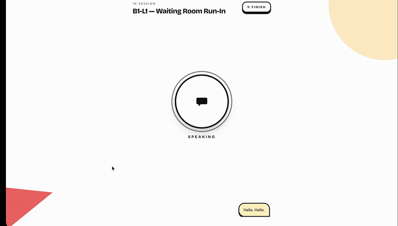
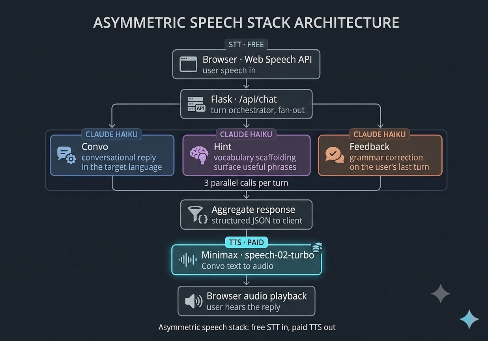

A character-driven Claude conversation loop in four languages — speak into your browser, hear a generated voice reply, get grammar feedback and a hint phrase on the side. My first shipped AI product, with the engineering scars to prove it.

Learning a language from a textbook is one problem. Speaking it out loud without freezing is a different one entirely.
Most language apps are vocabulary drills and matching exercises — useful for memorization, useless for the moment when someone is waiting for you to reply. The bridge from I know this word to I can use this word out loud is conversation, and conversation is gated by access (tutors are expensive, scheduling-dependent, and beginner mistakes feel public) and by latency (a typed exchange is not the same exercise as a spoken one).
Spralingua is an AI tutor you can talk to. A Claude-powered character chats with you in your target language, listens through your browser's mic, replies with a generated voice, and quietly produces grammar feedback and a hint phrase on the side — on every turn.
One Flask service, three Claude calls per turn, two audio providers, four languages.
Speech in via the browser's Web Speech API — free, native, sub-second. Speech out via Minimax's speech-02-turbo voices, one cloned voice per character. In between sits a Claude Haiku 3 conversation agent driven by a YAML personality file, plus two sidecar Claude calls: one for grammar feedback on what the user just said, one for a hint phrase to scaffold what they could say next. All three fire per turn.
Characters as YAML personality files, not inline strings. Each character (Harry, Sally) is a YAML file in /prompts/personalities that defines voice, tone, mannerisms, and how they react across learner levels. The conversation prompt is built dynamically from the YAML plus the user's target language and level setting. Adding a new character is one file, not a code change. Character consistency across sessions stops being a copy-paste discipline and starts being a data file that you version-control.
Conversation history in the Flask session cookie, not in worker memory. Production multi-worker Gunicorn doesn't share state across workers, and storing conversation in module-level dicts caused a real bug — users' histories could surface in someone else's chat when requests hit a different worker. The fix is to keep the rolling last-20-message history directly in the Flask session, which travels with the user via signed cookie. The trade-off is a larger cookie payload; the alternative (a Redis instance) wasn't worth running for one feature, and the session-bound approach makes worker crashes recoverable without ever crossing user boundaries.
Asymmetric speech stack — browser STT in, Minimax TTS out. Speech-to-text is the user's voice. It just needs to land as transcribed text, no expression required, and Web Speech API handles it free and sub-second in supported browsers. Text-to-speech is the character's voice. That one needs to sound like someone; Minimax's speech-02-turbo with cloned voices gives Harry and Sally identities you can hear. Free for the half that doesn't need polish, paid for the half that does.

Four groups, each choice with a short note on the reasoning behind it. This is V1, so a few honest "good enough for now" calls show up — they're flagged.
/migrations, which was fine at this scale but won't be at V2's.
claude-3-haiku-20240307 — Haiku 3 (March 2024 release). The character should reply at conversation pace, not analyst pace; Haiku was fast and cheap enough to make three calls per turn affordable.
V2 will revisit — Haiku 4.5 is a more capable model at similar cost, and the gap on character coherence is large enough to justify the migration.
time.sleep between calls was the scrappy patch that shipped V1. The right fix, deferred to V2, is separate Claude client instances per role so there's no shared context surface to bleed across.
/prompts/personalities/*.yaml for character voices, /prompts/templates for prompt scaffolds, conversation_prompt_builder.py for runtime composition. Same separation pattern that later carried into TubeText and Agora; Spralingua is where this habit started.
speech-02-turbo — the turbo tier favors latency over the HD tier's expressive range. For conversation-pace replies, turbo wins; HD's quality margin shows up most on long-form narration that this project doesn't do.
print() statements with topic prefixes ([MINIMAX], [CLAUDE CLIENT], [TTS REQUEST]). Honest: for a first shipped AI product, this is what observability actually was. Langfuse plus structured logging is a V2 priority, not a V1 omission to hide.
This is where Spralingua V1 is honest. There is no formal evaluation layer — no Langfuse, no LLM-as-judge, no automated scoring. The eval pipeline was: I used the app, early users tried it, and bugs surfaced through real use.
Two production lessons came out of that loop, and both shaped V2's roadmap.
The bug surfaced the way V1 bugs usually do: I opened my own session and saw a conversation I hadn't had. Worker-local conversation state was leaking across users when requests hit different workers. The fix was to persist conversation history directly into the signed Flask session cookie on every turn, so history travels with the user and never crosses session boundaries. The "evaluation" here was running the app yourself with eyes open — no instrumented test would have caught it on the first pass, because it only triggered under multi-worker production load.
The hint generator started echoing phrases from the conversation reply. Same Claude client instance, two sequential calls, with enough context surface for state to leak between them. The scrappy V1 fix was a 0.5-second time.sleep between the conversation reply and the hint call, which empirically resolved the bleed but is the kind of patch that needs to die in V2. The proper fix — separate client instances per role — is on the V2 list along with the multi-agent architecture that makes it natural.
The same Langfuse foundation that runs Agora's observability today is the obvious starting point: per-turn traces capturing the three Claude calls, latency on the full voice loop (input transcript → TTS audio playback), grammar-feedback quality scored via LLM-as-judge, and structured-output validation on hint payloads so schema drift across model upgrades doesn't ship to the user. None of it exists in V1; all of it is teed up.
language_mapper) and the Minimax voice config per character.V2 is well underway. Spralingua V1 proved the architecture pattern; V2 is where the lessons get answered. A glimpse, not a spec sheet — the full reveal comes when V2 ships.
time.sleep.print()-logs era ends; V2 will know its own latency before its users do.